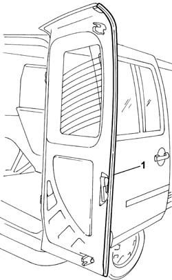

7020E22 rear door flap seals - r+r
- Path
- Procedures > 70 FITTINGS > 7020 LOAD CARRYING COMPARTMENT DOORS > 7020E rear swinging door > 7020E22 rear door flap seals - r+r
- Kind
- repair procedure (removal / refitting; the operation number is the code)
- Applies to
- all engines; all production periods
- Interactive page
- https://sloeber94.github.io/elrnDB-fDbl/en/#/2585079
Applies to: all engines; all production periods
 Removing
Removing
 Refitting
Refitting1. Prise off and remove the seal.

Applies to: all engines; all production periods
Refitting
RemovingCheck that the seal is not damaged.
Fit the seal on the door leaf, making sure that it adheres to the door flange.